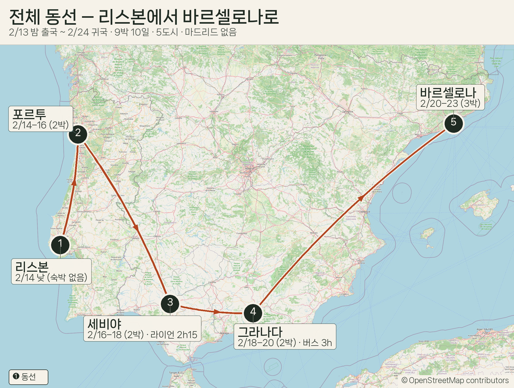
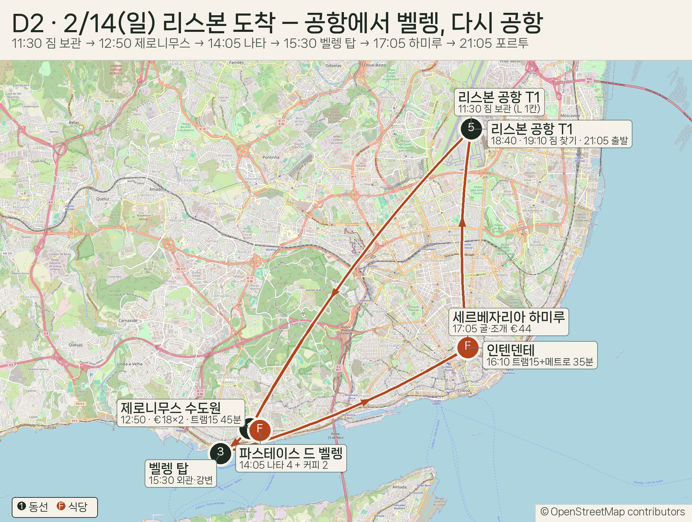
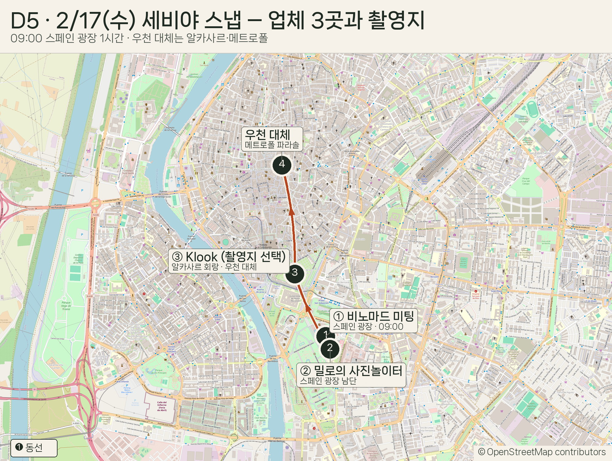

리스본 반나절에서
바르셀로나 사흘까지
리스본에 내려 제로니무스와 마차박물관을 보고, 하미루에서 조개를 먹고 그날 밤 포르투로 넘어가요. 포르투에서는 서점·시장·포트와이너리, 세비야에서는 대성당·알카사르와 플라멩코, 그라나다에서는 알함브라와 함맘, 바르셀로나에서는 가우디와 몬세라트까지. 궁전만 이어지지 않게 짰어요.

- 총액 · 2인
- 8,294,086원 (1인 4,147,043)
- 현지 지출
- 5,205,086항공 제외
- 항공 · 2인
- 2,689,000가는편 + 오는편
- 일수
- 9박 10일5도시 · 이동 6회
- 환율
- 1,531원 / € (3개월 평균)
동선 — 리스본에서 북상, 다시 남하
리스본(서) → 포르투(북) → 세비야(남) → 그라나다(동) → 바르셀로나(북동). 도시 간 비행 3 · 버스 1. 하루 안에서는 관광지 → 도보 점심 → 같은 동네 저녁 순서로 묶어 왕복 이동을 없앴어요.
일차 요약
행을 누르면 그날의 시각표와 비용 원장으로 넘어가요. 항공은 오픈조라 가는편은 D1 · 2/13(토), 오는편은 D11 · 2/23(화)에 넣었어요.
| 일 | 도시 | 그날 합계 |
|---|---|---|
| D1 · 2/13(토) | 인천 → 암스테르담 KL856 ICN 23:05 → AMS 05:20 | 2,819,000 |
| D2 · 2/14(일) | 리스본 → 포르투 LIS 10:30 · 제로니무스 · 하미루 · 21:05 포르투 | 766,721 |
| D3 · 2/15(월) | 포르투 (서점·리베이라·포트와이너리) 렐루 서점 · 상벤투 · 볼량 · 그레이엄스 포트 | 478,312 |
| D4 · 2/16(화) | 포르투 → 세비야 라이언 2h15 → 세비야 · 대성당 · 플라멩코 | 566,043 |
| D5 · 2/17(수) | 세비야 (스냅·알카사르) 스냅 · 알카사르 · 토레 델 오로 | 517,763 |
| D6 · 2/18(목) | 세비야 → 그라나다 알사 버스 3h → 그라나다 · 카르투하 · 타파스 | 322,051 |
| D7 · 2/19(금) | 그라나다 (알함브라·함맘) 알함브라 나사리 궁전 · 함맘 | 532,649 |
| D8 · 2/20(토) | 그라나다 → 바르셀로나 (쇼핑 ①) 부엘링 1h25 → 바르셀로나 · 쇼핑 ① | 709,175 |
| D9 · 2/21(일) | 바르셀로나 (가우디) 구엘 · 사그라다 내부 · 카사 바트요 | 613,552 |
| D10 · 2/22(월) | 바르셀로나 (몬세라트·소년합창단) 몬세라트 · 에스콜라니아 13:00 · 쇼핑 ② | 447,573 |
| D11 · 2/23(화) | 바르셀로나 → 인천 AF1149 BCN 10:05 → 2/24 11:15 인천 | 121,247 |
지도 — 손으로 확대해 보기
날짜를 고르면 그날 동선이 그려져요. 숫자는 방문 순서, 주황 핀은 식당이에요. 지도를 한 번 클릭하면 마우스 휠로 확대됩니다.
날짜별 정적 지도 — 인쇄·오프라인용
같은 동선을 그림으로 굳혀 둔 장이에요. 인쇄하거나 지하철에서 볼 때 쓰세요. 누르면 그날의 시각표로 넘어가요.



a-몬세라트노선.jpg)
-바르셀로나출국.jpg)
여행 기간 날씨 — 기후 추정
2027년 2월은 예보 범위(16일) 밖이라 과거 5년(2022–2026) 같은 날짜 평균이에요. 예보가 아니에요. 2월 안달루시아는 낮 19℃·밤 9℃, 포르투·바르셀로나는 비가 한 번쯤 와요. 출발 16일 전부터는 실제 예보로 바꿔 확인하세요.
| 날짜 | 도시 | 최고 | 최저 | 강수일 |
|---|---|---|---|---|
| D2 · 2/14 (일) | 리스본 | 17.1℃ | 9.9℃ | 20% |
| D3 · 2/15 (월) | 포르투 | 16.1℃ | 9.3℃ | 40% |
| D4 · 2/16 (화) | 세비야 | 19.4℃ | 8.8℃ | — |
| D5 · 2/17 (수) | 세비야 | 19.7℃ | 9.1℃ | — |
| D6 · 2/18 (목) | 그라나다 | 18.7℃ | 6.1℃ | — |
| D7 · 2/19 (금) | 그라나다 | 16.8℃ | 6.0℃ | — |
| D8 · 2/20 (토) | 바르셀로나 | 16.0℃ | 7.7℃ | — |
| D9 · 2/21 (일) | 바르셀로나 | 16.5℃ | 7.6℃ | 20% |
| D10 · 2/22 (월) | 몬세라트 | 14.5℃ | 2.4℃ | 40% |
| D11 · 2/23 (화) | 바르셀로나 | 15.7℃ | 6.9℃ | 60% |
복장 — 낮은 얇은 니트·재킷, 아침저녁은 코트. 그라나다는 최저 6℃까지 내려가니 목도리 하나. 비 대비 작은 우산 + 방수 신발. 스냅 촬영일(2/17)은 강수일 0%로 비 걱정이 가장 적은 날로 골랐어요.
세비야 스냅 — 업체 3곳과 촬영지
스페인 광장이 세비야 스냅의 기본 촬영지예요. 2/17 오전 09:00 슬롯으로 잡았고, 비가 오면 알카사르 회랑·메트로폴 파라솔로 바꿔요. 지도에 업체 미팅 지점과 대체 촬영지를 표시했어요.

| 업체 | 특징 | 가격(2인) | 미팅 |
|---|---|---|---|
| 비노마드 스튜디오 | 2014년부터 여행 스냅 전문 · 스페인·한국 정식 등록 · 현지작가 한국어 디렉션 | 220,000 1시간 · 후기 확인 | 스페인 광장 09:00 |
| 밀로의 사진놀이터 | 한국인 운영 · 세비야 스냅 후기 다수 · 감성 톤 | 문의 보통 20~25만(추정) | 스페인 광장 |
| Klook 세비야 스냅 | 플랫폼 예약이라 환불·일정 변경이 안전 · 촬영지 옵션 선택 | 상품별 옵션 확인 | 상품별 지정 |
예약 타이밍 — 2월은 비수기지만 주말 슬롯은 12월에 차요. 2026-12 중순까지 예약하고, 촬영 3일 전 날씨를 보고 오전/일몰 슬롯을 바꿔요(2/17 세비야 강수일 0%, 일몰 18:50). 원본은 보통 25일, 보정본은 촬영 후 50일 안에 받아요.
리스본은 하루, 나머지는 이틀씩
- D2 (2/14) 2/14 — 리스본 — 제로니무스 · 마차박물관 · 세르베자리아 하미루 → 21:05 포르투
- D2 · 2/14(일)–3 (2/14–15) 2/14–15 — 포르투 — 렐루 서점 · 상벤투 · 볼량 시장 · 그레이엄스 포트
- D4 · 2/16(화)–5 (2/16–17) 2/16–17 — 세비야 — 대성당 · 카사 모랄레스 · 플라멩코 · 스냅 · 알카사르
- D6 · 2/18(목)–7 (2/18–19) 2/18–19 — 그라나다 — 카르투하 · 타파스 크롤 · 알함브라 · 함맘
- D8 · 2/20(토)–11 (2/20–23) 2/20–23 — 바르셀로나 — 쇼핑 ① · 구엘·사그라다·카사 바트요 · 몬세라트 합창단 · 쇼핑 ②
리스본 0박 · 포르투 2박 · 세비야 2박 · 그라나다 2박 · 바르셀로나 3박이에요. 리스본을 빼서 바르셀로나에 하루를 더 줬어요.
주의 두 가지
- 숙소는 11/15 재조회 값이에요 — 9박 합계 1,254,469원. 에어비앤비·아고다는 이번 조회에서 차단돼 구글 호텔만 반영했어요.
- 리스본은 숙박 0박이에요 — 10:30 도착, 제로니무스·에그타르트·벨렝탑, 21:05 포르투행. 짐은 공항에 맡기고 가볍게 움직여요.
- 알함브라 나사리 궁전은 2/19 오전(금요일)으로 잡았어요 — 티켓 오픈 즉시 예약이 안전해요.
- 오픈조가 이번엔 제일 싸요 — 2인 2,689,000원. 마드리드 왕복(228만)과 같은 값대인데, 마드리드를 아예 안 들러요.
총액 구성
| 항목 | 2인 |
|---|---|
| 항공 (KL856·AF264 다구간 1장, 11/15 실결제) | 2,689,000 |
| 숙박 9박 | 1,254,469 |
| 도시세 (포르투 2박 · 바르셀로나 3박) | 95,545 |
| 식비 10일 (식당 실메뉴 + 현장 예산) | 1,419,490 |
| 입장·관람 (알함브라 · 사그라다 · 함맘 · 그레이엄스 등) | 1,200,314 |
| 시내교통 (메트로·버스·택시·공항버스) | 332,098 |
| 도시 간 이동 (TAP·라이언·알사·부엘링) | 548,806 |
| 수하물 (라이언 23kg · 부엘링 20kg) | 214,364 |
| 보험·eSIM·인천↔대전 | 140,000 |
| 여유·기념품 | 400,000 |
| 합계 — 2인 | 8,294,086 |
1,000만원 상한 대비 여유는 1,705,914원이에요. 유로로 내는 돈이 3,047,447원이라 환율이 100원 움직이면 2인 예산이 약 199,027원 달라져요(계획 환율 1,531원/€ · 2026-11-19 3개월 평균).
예약 현황 — 끝난 것과 남은 것
항공은 2인 2,689,000원에 발권이 끝났어요(KLM·AF, 예약 XUHBAH). 나머지는 아직 열리지 않았거나 이번 주에 열립니다. 순서대로만 하면 늦지 않아요.
| 시점 | 무엇 |
|---|---|
| 11/19 (오늘) | 알함브라 2/19 08:45 — 3개월 전, 최대 병목 |
| 11/25 | 그레이엄스 · 카사 데 라 메모리아 · 하미루 |
| 12/01 | 제로니무스 · 알카사르 · 사그라다 · 구엘 · 카사 바트요 · 렐루 · 함맘 |
| 12월 | 라이언 · 부엘링 · 알사 · (선택) 투리나 편성 확인 |
| 2027-01-22 | 몬세라트 에스콜라니아 · 스냅 최종 확정 |
티켓은 예약 캘린더에 사이트·가격·필요 정보까지 정리해 뒀어요.
명품 포함 총액
주얼리 값은 공식 사이트(한국·일본·스페인)를 직접 조회한 값이에요(2026-10-18). 택스리펀 후 실구매 기준이에요. 자세한 건 귀고리 10종 비교 · 택스리펀에서 보세요.
| 후보 | 쇼핑액 | 여행+쇼핑 | 1,000만 | 1,200만 |
|---|---|---|---|---|
| 없음 | 0 | 8,294,086 | 가능 | 가능 |
| 까르띠에 다무르 펜던트 SM (€1,520) | 2,026,628 | 10,320,714 | — | 가능 |
| 까르띠에 트리니티 이어링 플레인 (€2,040) | 2,719,948 | 11,014,034 | — | 가능 |
| 불가리 세르펜티 바이퍼 링 (€2,770) | 3,693,263 | 11,987,349 | — | 가능 |
| 반클리프 알함브라 펜던트 오닉스 (€3,100) | 4,133,255 | 12,427,341 | — | 초과 |
| 까르띠에 트리니티 이어링 클래식 (€3,800) | 5,066,570 | 13,360,656 | — | 초과 |
트리니티 이어링 클래식(€3,800)까지 넣으면 13,360,656원이라 절대 상한 1,200만원을 넘어요. 1,000만원 안에서 주얼리를 넣으시려면 트리니티 이어링 플레인(€2,040)까지가 한계예요.
항공 조회 링크
아래 링크는 우리 날짜 · 2인으로 바로 열려요(구글 항공권). 요금은 조회 시점에 따라 움직이니 결제 전에 한 번 더 눌러 확인해 주세요.
날짜 지정 검색은 스크립트·헤드리스로 열면 캡차에 막혀서, 이 링크로 직접 보시는 게 가장 정확해요. 「최저」는 경유 25~31시간, 「추천」은 21시간 55분 / 16시간 10분이에요 — 계획값은 「추천」으로 잡았어요.